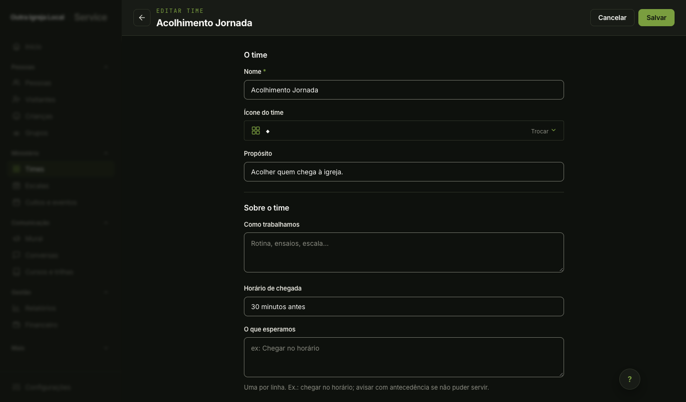
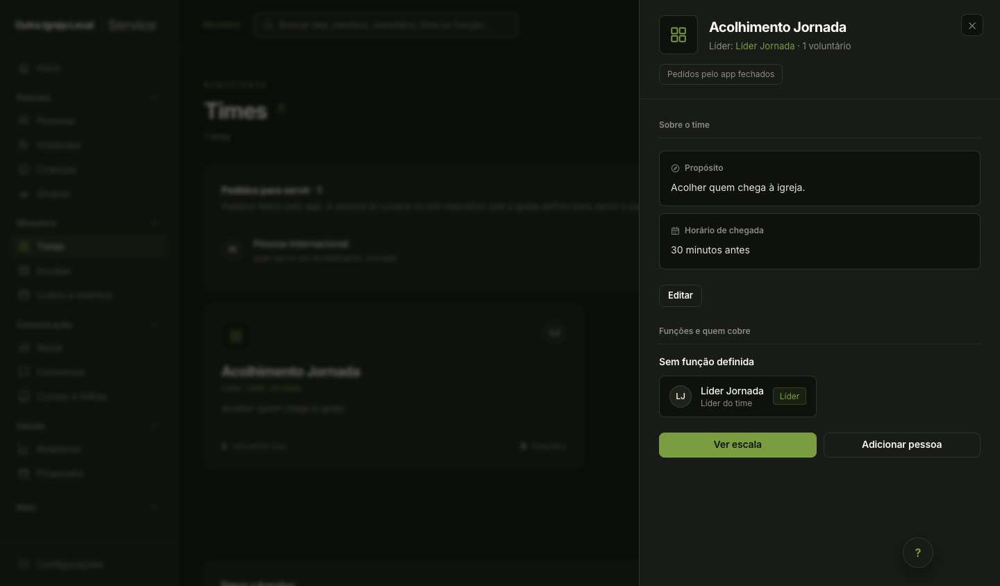
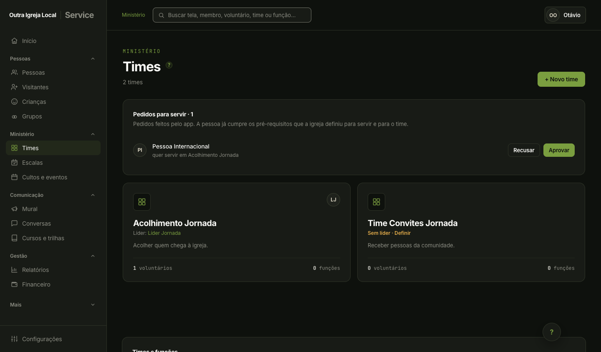

Abertura explícita pela gestão, pedido com destinatário, acompanhamento do próprio status e aprovação separada. Veja verificações e limites. Capturas locais por etapa, com tentativas intermediárias registradas no manifesto.


